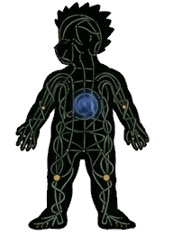
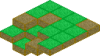
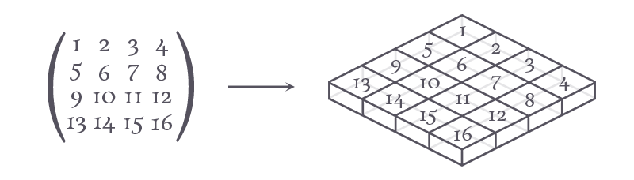

The Idea
The Idea of the game is pretty simple (and a bit common). I haven't
fleshed out all of the details, but in general it will be a pixelated
RPG game with the civilizations having technology about as advanced
as those in Skyrim. The more intriguing part of this game comes
from its skill-learning mechanics. At least in Skyrim, the method
of "learning" spells was just reading a book. I want to have
a game where learning is much more continuous and much less discrete.
So I sort of envision a mechanic (at least in regards to learning
spells) where one can practice a spell, by hitting a series of keys,
and the best spell the character achieves in practice is the one
that will be used in battle.
 The specific mechanic of practicing spells is largely inspired by the energy (or chakra) system in Naruto. The idea is that every individual has a mana center/core, and they have a system of mana-carrying wires througout the body, as seen in the image. These wires are connected by gates which can be opened and closed by the player. These gates also correspond to elements, in order to use specific spells. For example, one could open a fire gate and then open a gate near their hands, and that could be a spell that shoots fire from their hands. The proper timing of when the energy arrives to a gate and when that gate is opened would factor in to how successful the spell was. The best/strongest spell used in training would be the one used in battle. That is the general idea of the spell-learning mechanic.
The Style
A few months ago, when I was first beginning to thing about making this
game, I drew up a few mockups of some sample tiles, that would be used

in the map. I had imagined a game with an isomorphic perspective, and
where tiles could have different heights. The sample 4x4 map here
gives a good visualization. I also did a bit of investigation into
what the math would look like when projecting a map stored in data to
one in this isometric style, and discovered that it is easier than
I initially expected.
So, what we want to achieve is we want to project a map that is stored as a 2D array (list of lists in Python) onto, what looks like, a skewed plane.  This doesn't end up being too difficult. I decided to use a 2D engine for this game, so what I have to work with are tiles like these
 which are 32 pixels wide and 24 pixels tall. The general formula is,
for a tile at row $r$ and column $c$, the coordinate of the tile
in the rendered space is ($16(r-c), 8(r + c)$). The general idea is,
when you move down a row in the array, you increase the $x-$coordinate
by 16, and increase the $y-$coordinate by 8. When moving down a column,
you still increase the $y-$coordinate by 8, but you decrease the
$x-$coordinate by 16. Note: pygame has the $y-$axis
increasing as you move down the screen.
which are 32 pixels wide and 24 pixels tall. The general formula is,
for a tile at row $r$ and column $c$, the coordinate of the tile
in the rendered space is ($16(r-c), 8(r + c)$). The general idea is,
when you move down a row in the array, you increase the $x-$coordinate
by 16, and increase the $y-$coordinate by 8. When moving down a column,
you still increase the $y-$coordinate by 8, but you decrease the
$x-$coordinate by 16. Note: pygame has the $y-$axis
increasing as you move down the screen.
Where We Go From Here
That's about all I know on the mechanics of the game so far, and it
will be fleshed out as I program the game. At the time of writing
this, I have merely a small structure of code set up, with a
Game class that controls the state of the game. I'm
trying to get a general feel as to what classes I will need and
what classes will control what. I'll have a new post once I figure
that out.